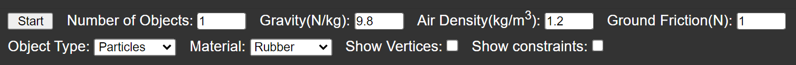
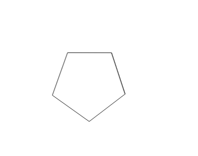
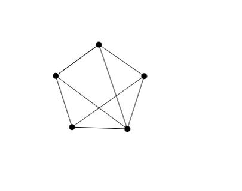
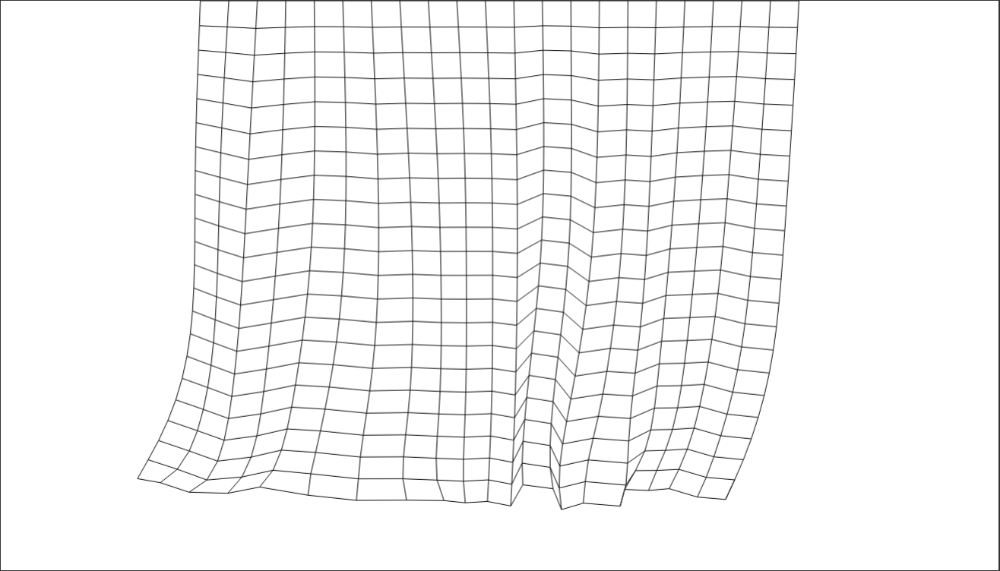
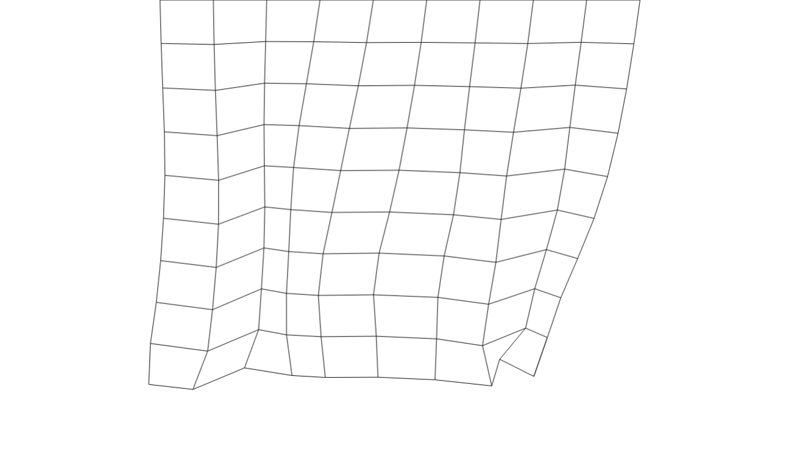
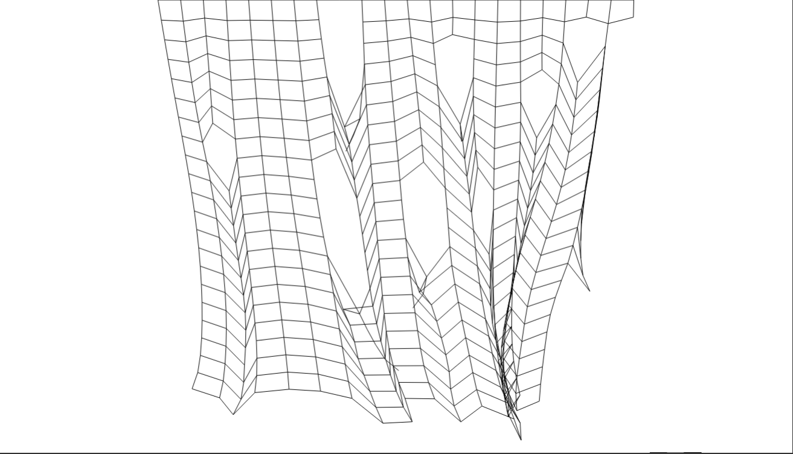
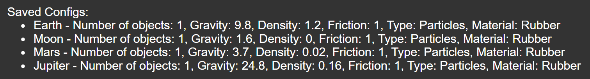
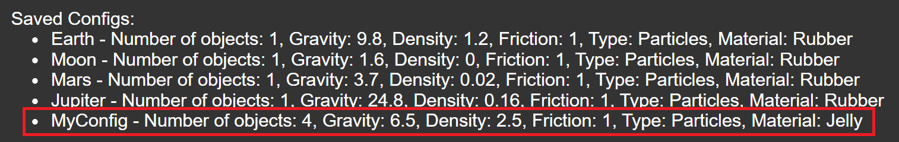

This project was created as coursework for Advanced Higher Computing Science while I was 16-17 years old. I was still learning the basic concepts of OOP and had zero guidance on implementing something like this and as such,
the implementation is poor - poor memory and object management, poor decoupling and encapsulation, not to mention inconsistent framerates across machines! I was still happy with the results however and I feel I have a deeper knowledge of the inner workings of
complex physics systems than many of my peers.
The following text and tutorial was included in the submission of the project:
This project uses a numerical method first developed in 1791 called Verlet integration, which is used to
integrate Newton’s equations of motion to calculate trajectories of particles. It was first used in a video game
by IO Interactive in Hitman: Codename 47, released on 19th November 2000. I myself have implemented the basic algorithm and
further built upon it to make the simulation more precise/accurate.
It works by finding where a particle was in the last frame and how far it moved to get there. From this it works out the particles current
velocity and then moves the particle accordingly. Once this is done, it again changes where the particle is by moving it down a bit for gravity,
back the direction it came for air resistance based on the drag equation \(F_D=\frac{1}{2}\rho{v^2}C_DA\), and when on the floor, the particle is moved backwards
to slow it down due to friction.
To keep a line between two points rigid, once both points have updated the distance between them is calculated. This distance is then compared with how far apart
they should be and the points are moved towards each other until they are the correct distance apart.
Tutorials
Click below to see tutorials:
Ragdoll Demo
This demo showcases something known as ragdoll physics - "a type of procedural animation used by physics engines, which is often used as a replacement for traditional static death animations in video games and animated films."
Beneath the Demo, you will see a Start button, along with various other inputs:

Clicking the start button will begin the simulation. Alternatively you can first select what type of
object you want to simulate and how many of them (you cannot change these during the simulation). All other variables, except for in some
special circumstances are changeable at any point. They do however have minimum and maximum limits. Gravity, air density and ground friction are self explanatory (they are all fairly accurate and assume 100px = 1m). There are two options for Material: Rubber makes objects fairly rigid and friction has a large effect,
while Jelly makes objects wobbly (more noticeable on some object types than others) and slippery.
Once the simulation has started, the object of your choice will generate:

Checking the Show Vertices and Show Constraints boxes will reveal the points making up the object and hidden lines keeping the object rigid:

Now you can play around with your objects by picking them up, dragging them around the screen and throwing them using the mouse! You can't click anywhere on the shape, though - you have to pick it up by the vertices.
Also, you must be scrolled to the top of the page for it to work properly.
Cloth Demo
This demo shows how things such as cloth/fabrics can be simulated.
Beneath the Demo, you will see a Start button, along with two other inputs:
Clicking the start button will begin the simulation. Alternatively you can first select how many points will make up the cloth
(you cannot change this during the simulation. If your computer is slow it's recommended you select a lower number.):


Once the simulation has started, cloth like in the images above will generate. You can swish the cloth around with the mouse (you must be scrolled to the top of the page for it to work properly),
and depending on what Tensile Strength you select (you can change this at any time), it may rip apart:

Save System
Beneath all simulations, you will see the save system:
If you have set the variables to certain values and want to revisit this configuration later, you can use this to save them (RELOADING THE PAGE WILL WIPE YOUR SAVES).
Enter a name for your configuration into the Name configuration box and click Save:
You'll see your configuration is added to the list below the inputs:
Before:

After:

To quickly set all variables to those in a saved configuration
(the Ragdoll Demo comes with the list above pre-saved), simply type its name into the Configuration to Set to box and click Set.